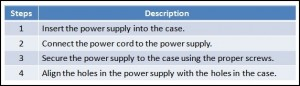
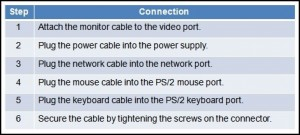

Chapter 03 – IT Essentials
1. What is a function of a video adapter card?
- stores video files in RAM;
- connects a computer to a video storage device;
- provides the appropriate drivers for the monitor;
- provides an interface between a computer and a display monitor.
2. A technician has just finished assembling a new computer. When the computer is powered up for the first time, the POST discovers a problem. How does the POST indicate the error?
- It issues a number of short beeps.
- The LED on the front of the computer case flashes a number of times.
- It places an error message in the BIOS.
- It locks the keyboard.
3. What is a convenient way that a technician can tell whether a ribbon cable is for an IDE hard drive or a floppy drive?
- The IDE cable has a colored stripe on one edge.
- The floppy cable motherboard connector is normally gray.
- The IDE cable is gray.
- The floppy cable has a twist in the cable.
4. A field technician has been asked to install a wireless 802.11g NIC in a computer, but is unsure about the expansion slots available. Which two types of wireless NICs should the technician have available? (Choose two.)
- PCIe;
- AGP;
- SCSI;
- PCI;
- SATA.
5. Which type of drive is installed in a 5.25-inch bay?
- hard drive;
- optical drive;
- floppy drive;
- LS120 drive.
6. Which action is recommended to prevent the motherboard from contacting the metal base of the case?
- Ensure that the non-conductive side of the case is beneath the motherboard.
- Use standoffs to keep the motherboard above the metal base.
- Use a self-adhesive non-conductive membrane on the underside of the motherboard.
7. What is the first step that a technician should take before physically opening a computer case?
- Verify the room temperature.
- Consult the website of the manufacturer.
- Check the ventilation in the room.
- Provide small containers to collect small screws.
8. What is the most reliable way for users to buy the correct RAM to upgrade a computer?
- Buy RAM that is the same color as the memory sockets on the motherboard.
- Ensure that the RAM chip is the same size as the ROM chip.
- Ensure that the RAM is compatible with the peripherals installed on the motherboard.
- Check the motherboard manual or manufacturer’s website.
9. After a technician has assembled a new computer, it is necessary to configure the BIOS. At which point must a key be pressed to start the BIOS setup program?
- before the computer is powered on;
- during the Windows load process;
- during the POST;
- after the POST, but before Windows starts to load.
10. Which two connections should be provided to a floppy disk drive during installation? (Choose two.)
- a floppy data cable to connect the FDD to the motherboard;
- a cable from the power supply to the Berg power connector on the FDD;
- a cable from the 3-pin fan power connector into the Berg power connector on the FDD;
- a data cable from the Molex connector of the optical drive to the Berg connector on the FDD;
- a cable from the 20-pin ATX power connector socket on the motherboard to the Berg power connector on the FDD.
11.  Refer to the exhibit. What is the order of steps that should be followed for a power supply installation in a computer?
- Steps 1, 2, 4;
- Steps 1, 3, 2;
- Steps 1, 4, 3;
- Steps 2, 3, 4.
12. When building a computer, which two components are normally installed in 3.5-inch drive bays? (Choose two.)
- hard drive;
- optical drive;
- floppy drive;
- flash drive;
- video card.
13. Which two connectors are used to connect external peripherals? (Choose two.)
- EIDE;
- Molex;
- PATA;
- PS/2;
- USB.
14.  Refer to the exhibit. Which should be the last step when connecting external cables to a computer?
- Step 1;
- Step 2;
- Step 3;
- Step 4;
- Step 5;
- Step 6.
15. A technician is installing a new power supply in a computer. Which type of power connector should be used to connect to an ATX motherboard?
- Berg;
- Mini-Molex;
- Molex;
- 20-pin connector.
16. Where should internal drives be installed in a computer?
- in internal bays;
- on the AGP channel;
- on the motherboard;
- on PCIe expansion slots.
17. What is a function of the BIOS?
- enables a computer to connect to a network;
- provides temporary data storage for the CPU;
- performs a check on all internal components;
- provides graphic capabilities for games and applications.
18. When installing a CPU in a ZIF socket, how should the technician align the pins to avoid damage?
- Pin 1 is always aligned with the opposite corner from the base of the lever.
- Pin 1 on the CPU is aligned with Pin 1 on the ZIF socket.
- Pin 1 is aligned with the corner closest to the memory.
- The removed corner of the CPU is always aligned with the corner opposite Pin 1.
19. What should be the next installation step after all the internal components of a PC have been installed and connected to the motherboard and power supply?
- Connect the monitor cable;
- Connect the network cable;
- Reattach the side panels to the case;
- Connect the power cables to the computer.
20. What is a function of the adapter cards that are installed in a computer?

{kind=link}
{kind=link}